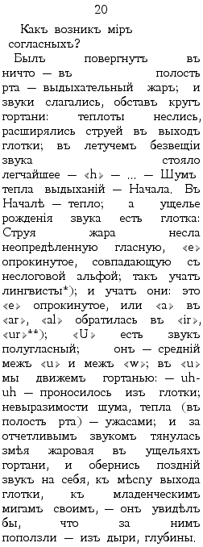
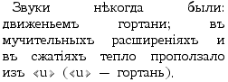
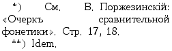

Glossolalia (Section 20)

How did the world of consonants arise?
The exhaled heat had been turned into nothingness -- into the orifice of the mouth; and having surrounded the circle of the larynx, the sounds composed: warmths were carried about, expanding as a stream toward the exit of the throat; in the fleeting objectlessness of sound stood the very light -- "h" -- . . . -- The noise of the warmth of exhalations is -- the Beginnings. In the Beginning -- it was warm; and the gorge of the birth of sound is the throat: A stream of heat bore an indeterminate vowel, "e" inverted, coinciding with the non-syllabic alpha; so teach us the linguists*; and then they teach us: this inverted "e" , or "a" in "ar," "al" turned into "ir," "ur"; ** "U" is a semivowel sound; it is -- medial between "u" and "w"; for "u" we move the larynx: -- uh-uh -- was carried through from the throat; the inexpressibilities of the noise, of the warmth (in the orifice of the mouth) are -- horrors [uzhasami]; and beyond the distinct sound stretched a heat serpent in the gorges of the larynx, and had this latter sound turned back to itself, to the place of exit of the throat, to its own infantile moments -- it would have seen, that behind it they were beginning to crawl -- from the hole, from out of the depth.

Once upon a time the sounds were: movement of the larynx; in tormented expansions and in compressions the warm began crawling from "u" ("u" is -- the larynx).

* Cf. W. Porzezinski, Essay on Comparative Phonetics. pp. 17, 18.
* * ibid.